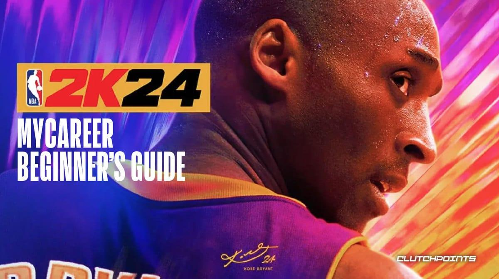

I love to watch action movies and TV shows, like Top Boy and Equalizer, they provide some interest and allow for me to temporarily escape reality and observe a series of events that are all planned out
Learn more about the Top Boy show on Netflix.com.
I have a lust for playing video games such as Valorant and Rocket League, with my favourite and most despised game yet, being NBA 2K games. I'm not on pro level in certain games, but I am a decent team player.
Find out more about NBA 2K24 at NBA.2K.com.
Nature contains so much that one can doze of in nature for hours, and lose track of time finding the perfection in nature, its landscapes, and way of life. There is so much to observe, such as:
As of September 11th, 2023, my favorite album is Graduation by Kanye West released on September 11th, 2007. The compilation of songs released has the perfect effect on the listeners, a balance of hype and relaxingness, making it my favourite album OAT.


My ranking of my favorite albums goes as follows:
Learn more about Kanye West here.